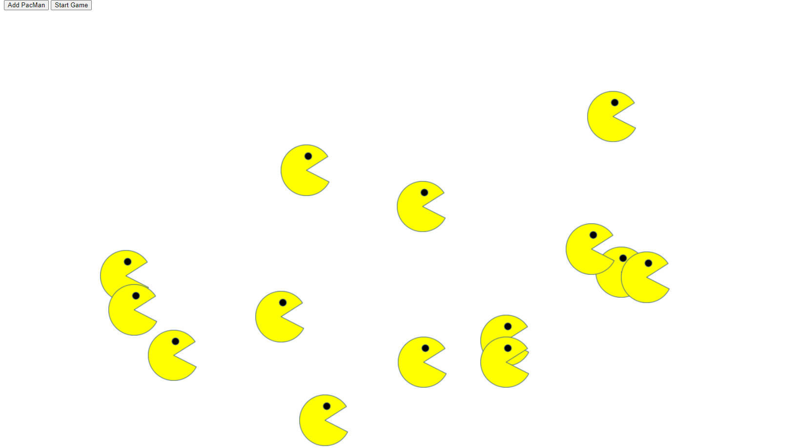
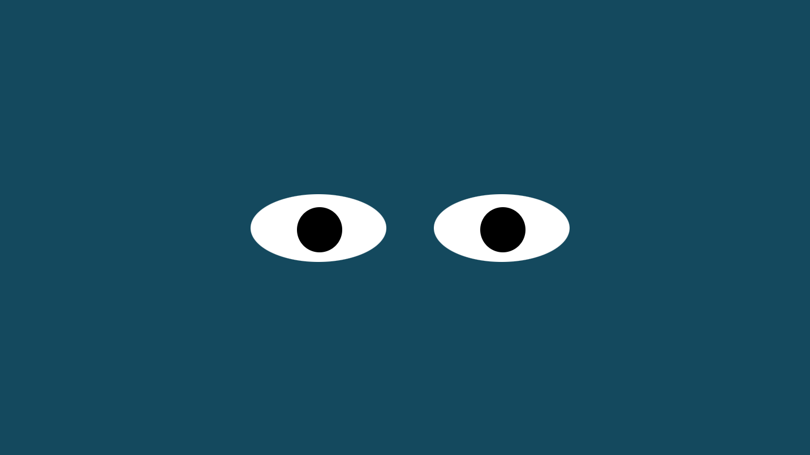
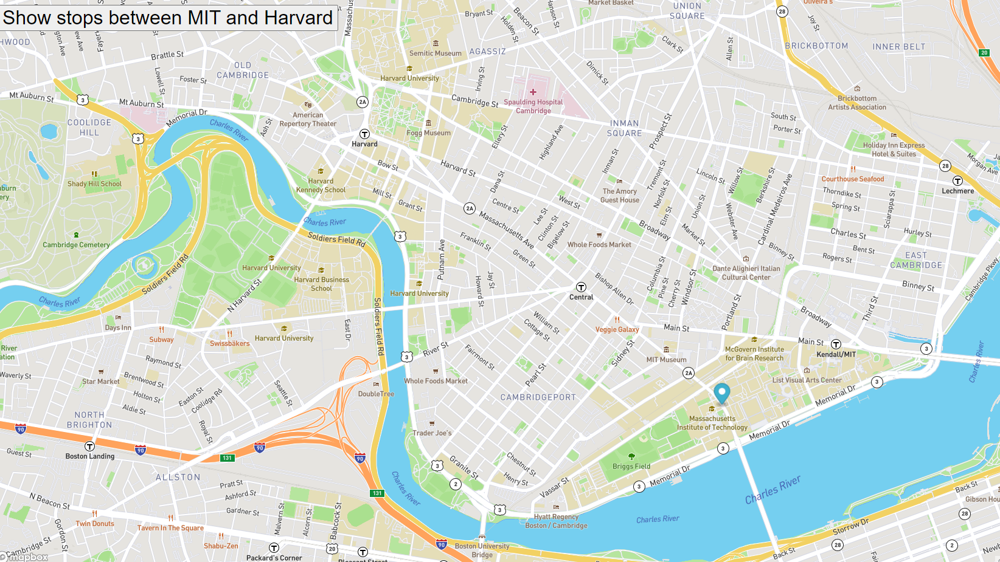

My Recent Projects

PacMen Exercise
This project creates PacMen with the click of a button and then moves them bounces them around in the browser window.
View Repo

Eye Exercise
This project tracks the movement of your mouse with the eyeballs. Both eyes move synchronously following your mouse on the page.
View Repo
